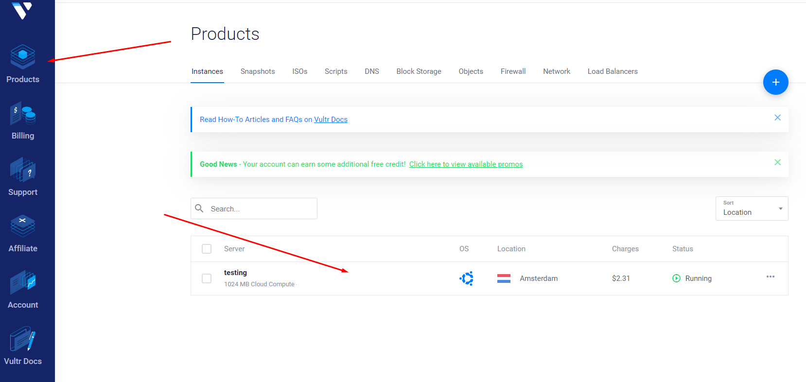
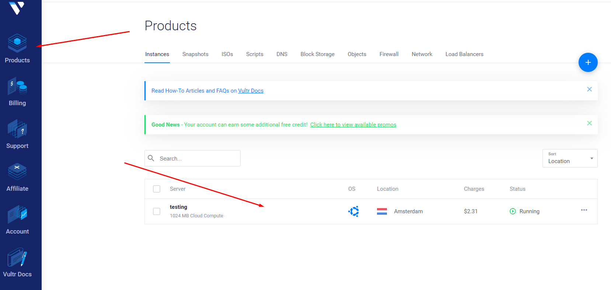

Latest version: [DIRTY]d44a1339bdbdd5ebe747124c7146f435a3f73453
This guide was created for anyone who wants to set-up Mina node.
Requirement:
- Server requirement:
- CPU: min. 8 cores (or vCPU)
- RAM: min. 16 Gb (32Gb or more recommended)
- OS: Ubuntu 18.04
- Mina email with Testworld invitation.
0. Rent a Server
As a first step we need to rent a server (VPS). I recommend Vultr.com.
Registation
Go to the site, click Sign Up

Fill the form, click Create Account:

On the 'Products' page click Plus button:

We need at least 8vCPU and 16Gb RAM server, let's chose the closest one:


Now let's rent it (hostname can be any), click Deploy Now:

Then click 'Products' at the top left and wait till our server's status is 'Running' (green) and click on the server:

We need the following server data, copy&paste them to notepad:

Now we need to connect to the server, to do this we will use Termius. First of all download and install it.
Open Terminus and click '+New Host' as shown on the screen:

In the following fields we need to type our server data (that we copied from Vultr): IP address, login and pass. You can type anything in 'Label' field - this is just the name of the server for your convenience.

Double click on the server, in the pop-up click 'Yes'.
Now we are in, congratulations! So we can continue.
Registation
Go to the site, click Sign Up
Fill the form, click Create Account:
On the 'Products' page click Plus button:
We need at least 8vCPU and 16Gb RAM server, let's chose the closest one:
Now let's rent it (hostname can be any), click Deploy Now:
Then click 'Products' at the top left and wait till our server's status is 'Running' (green) and click on the server:

We need the following server data, copy&paste them to notepad:
Now we need to connect to the server, to do this we will use Termius. First of all download and install it.
Open Terminus and click '+New Host' as shown on the screen:
In the following fields we need to type our server data (that we copied from Vultr): IP address, login and pass. You can type anything in 'Label' field - this is just the name of the server for your convenience.
Double click on the server, in the pop-up click 'Yes'.
Now we are in, congratulations! So we can continue.
1. Keys set-up
First of all we need to create directories for keys. To do it enter the following:
mkdir ~/keys
mkdir ~/keys
After this we will need a link to download our keys - this link can be found in your
email (in case you are eligable to participate in the testnet). In order to download
keys, enter the following:
wget -O ~/keys/keys.zip %адрес_на_скачку_ключей_с_почты%
Result should be the following:
wget -O ~/keys/keys.zip https://storage.googleapis.com/testworldkeys/asloidfo3129021hfs8982j.zip
wget -O ~/keys/keys.zip %адрес_на_скачку_ключей_с_почты%
Result should be the following:
wget -O ~/keys/keys.zip https://storage.googleapis.com/testworldkeys/asloidfo3129021hfs8982j.zip
Then we need to unzip keys, to do this enter the following:
apt install unzip
cd ~/keys
unzip keys.zip
cd ~/keys
unzip keys.zip
As a result 2 files should appear in the folder, names should be in the following
format:
extra_fish_%number% and extra_fish_%number%.pub, let's rename them for our convenience:
To do it, type the following:
mv extra_fish_%number% mina-wallet
mv extra_fish_%number%.pub mina-wallet.pub
cd
extra_fish_%number% and extra_fish_%number%.pub, let's rename them for our convenience:
To do it, type the following:
mv extra_fish_%number% mina-wallet
mv extra_fish_%number%.pub mina-wallet.pub
cd
Now let's set access rights for our keys:
chmod 700 $HOME/keys
chmod 600 $HOME/keys/mina-wallet
chmod 700 $HOME/keys
chmod 600 $HOME/keys/mina-wallet
Now let's set variables KEYPATH and MINA_PUBLIC_KEY. For the
convenience let's set them in .bashrc
echo 'export KEYPATH=$HOME/keys/mina-wallet' >> $HOME/.bashrc
echo 'export MINA_PUBLIC_KEY=$(cat $HOME/keys/mina-wallet.pub)' >> $HOME/.bashrc
source ~/.bashrc
echo 'export KEYPATH=$HOME/keys/mina-wallet' >> $HOME/.bashrc
echo 'export MINA_PUBLIC_KEY=$(cat $HOME/keys/mina-wallet.pub)' >> $HOME/.bashrc
source ~/.bashrc
After that we need to download the list of peers:
wget -O ~/peers.txt https://raw.githubusercontent.com/MinaProtocol/coda-automation/bug-bounty-net/terraform/testnets/testworld/peers.txt
wget -O ~/peers.txt https://raw.githubusercontent.com/MinaProtocol/coda-automation/bug-bounty-net/terraform/testnets/testworld/peers.txt
Attention! Update peers once in 3 hours using @AkiAfrooscript, to do this execute the following:
wget https://raw.githubusercontent.com/AkiAfroo/minacheckpeers/main/checkpeerschmod +x checkpeers
bash checkpeers
In the pop-up enter 'Y' (in case you have new peers), click Enter
Once in 3 hours you need to execute bash checkpeers command.
2. Node Set-up with Ubuntu 18.04
As the first step here we need to open server' ports. Usually they are already opened,
but let's double check:
sudo apt install ufw
sudo ufw allow 22
sudo ufw allow 8302
sudo ufw allow 8303
sudo ufw enable
sudo apt install ufw
sudo ufw allow 22
sudo ufw allow 8302
sudo ufw allow 8303
sudo ufw enable
Then let's set-up the node itself:
sudo apt-get remove -y coda-testnet-postake-medium-curves
mkdir .coda-config
sudo apt-get update
sudo apt-get install -y apt-transport-https ca-certificates
echo "deb [trusted=yes] http://packages.o1test.net release main" | sudo tee /etc/apt/sources.list.d/mina.list
sudo apt-get update
sudo apt-get install -y curl mina-testnet-postake-medium-curves=0.2.5-d44a133 --allow-downgrades
Let's check the node version using coda version command, the version should be [DIRTY]d44a1339bdbdd5ebe747124c7146f435a3f73453,
in case it differs either:
sudo apt-get remove -y coda-testnet-postake-medium-curves
mkdir .coda-config
sudo apt-get update
sudo apt-get install -y apt-transport-https ca-certificates
echo "deb [trusted=yes] http://packages.o1test.net release main" | sudo tee /etc/apt/sources.list.d/mina.list
sudo apt-get update
sudo apt-get install -y curl mina-testnet-postake-medium-curves=0.2.5-d44a133 --allow-downgrades
Let's check the node version using coda version command, the version should be [DIRTY]d44a1339bdbdd5ebe747124c7146f435a3f73453,
in case it differs either:
- This guide is outdated, the actual version you can always check in the official project docs
- You perform some of the previous steps incorreclty, retry from the sudo apt-get remove -y coda-testnet-postake-medium-curves step.
3. Mining Preparations
Before the start we need to do the following steps: import account and unlock the key:
coda accounts import -privkey-path $KEYPATH
In the pop-up enter your private key (from the email you got before), and set the password for the account - remember this password, you will need it to unlock your account further.
coda accounts import -privkey-path $KEYPATH
In the pop-up enter your private key (from the email you got before), and set the password for the account - remember this password, you will need it to unlock your account further.
In case everything went well you'll get "Successful" message.
coda accounts unlock -public-key $MINA_PUBLIC_KEY
coda accounts unlock -public-key $MINA_PUBLIC_KEY
4. Node Launch
In order to launch the node, enter the following commands:
screen -S mina_node
Next:
CODA_PRIVKEY_PASS=%ваш_ключ_из_письма_на_почте% coda daemon -peer-list-file ~/peers.txt -block-producer-key ~/keys/mina-wallet -generate-genesis-proof true -file-log-level Info -run-snark-worker $MINA_PUBLIC_KEY -super-catchup
Ctrl + A, then D
Wait for the 'Synced' status in the 'Sync status' lane.
Congratulations, your node is working!
screen -S mina_node
Next:
CODA_PRIVKEY_PASS=%ваш_ключ_из_письма_на_почте% coda daemon -peer-list-file ~/peers.txt -block-producer-key ~/keys/mina-wallet -generate-genesis-proof true -file-log-level Info -run-snark-worker $MINA_PUBLIC_KEY -super-catchup
Ctrl + A, then D
Check node status:
coda client status
or
watch -n 30 "coda client status | grep -v 'ip4/'" - in this case it will be checked every 30 secs and update automatically
* In order to get back to the node window (restart or just to check) enter the
following: screen -rd mina_nodecoda client status
or
watch -n 30 "coda client status | grep -v 'ip4/'" - in this case it will be checked every 30 secs and update automatically
Wait for the 'Synced' status in the 'Sync status' lane.
Congratulations, your node is working!
5. Snark Stopper set-up (optional)
Snark stopper is for those who set Block Producer and Snark worker on the same server.
Install:Snark worker uses all processing resources available, but this script stops snark worker in case we are close to block producing and resumes it when block producing is over.
screen -S mina-snark-stopper
sudo apt install jq git python3-venv
git clone https://github.com/c29r3/mina-snark-stopper.git
cd mina-snark-stopper
python3 -m venv venv
source ./venv/bin/activate
pip3 install -r requirements.txt
sudo apt install jq git python3-venv
git clone https://github.com/c29r3/mina-snark-stopper.git
cd mina-snark-stopper
python3 -m venv venv
source ./venv/bin/activate
pip3 install -r requirements.txt
Now let's setup:
nano $HOME/mina-snark-stopper/config.yml
After this a text editor should appear:
Change attributes WORKER_PUB_KEY и WORKER_FEE:
WORKER_PUB_KEY: YOUR_PUBLIC_KEY replace YOUR_PUBLIC_KEY with $MINA_PUBLIC_KEY
WORKER_FEE: 1 replace 1 with 0.4-0.5
nano $HOME/mina-snark-stopper/config.yml
After this a text editor should appear:
Change attributes WORKER_PUB_KEY и WORKER_FEE:
WORKER_PUB_KEY: YOUR_PUBLIC_KEY replace YOUR_PUBLIC_KEY with $MINA_PUBLIC_KEY
WORKER_FEE: 1 replace 1 with 0.4-0.5
Launch:
venv/bin/python3 snark-stopper.py
Ctrl + A, then D
venv/bin/python3 snark-stopper.py
Ctrl + A, then D
Now let's check the script status:
screen -rd mina-snark-stopper
The result should be:
screen -rd mina-snark-stopper
The result should be:
In case of any errors check the following:
- You have the latest Snark Stopper version installed, in order to do this enter the following:
- cd ~/mina-snark-stopper
- git pull
If it downloaded nothing, then the version you have the latest version, itherwise enter the following: - venv/bin/python3 snark-stopper.py
After this your script should work properly. - Your Snark Wordek is working. In order to check it, enter the following:
coda
client status, in the SNARK WORKER attribute there should be your key:
In case it's not there, execute the following:
coda client set-snark-worker -address $MINA_PUBLIC_KEY
After this your script should work correctly, otherwise please consultthe development team.
Exit the view:
Ctrl + A, then D
Ctrl + A, then D
If you have:
- Node status 'Synced'
- The latest node version (type coda version command, it should be the same as in the header of this guide and/or official project documentation)
- Snark Stopper is working (in case you have it)
Дополнительно: установка нескольких снарк воркеров
Эта процедура может быть полезна тем людям, которые хотят производить больше снарков и имеют
или же арендуют большое количество серверов.
Требования:
- Несколько серверов со следующей конфигурацией:
- Минимум 4 потока
- Минимум 8 гигабайт оперативной памяти
Для установки снарк воркера нам не потребуется разворачивать полноценную ноду, достаточно
внести некоторые изменения в вашу основную ноду (она будет координатором для ваших
дополнительных серверов).
Нам нужно добавить следующие флаги к нашей текущей ноде:
CODA_PRIVKEY_PASS=%ваш_ключ_из_письма_на_почте% coda daemon -peer-list-file ~/peers.txt -block-producer-key ~/keys/mina-wallet -generate-genesis-proof true -file-log-level Info -run-snark-worker $MINA_PUBLIC_KEY -run-snark-coordinator $MINA_PUBLIC_KEY -snark-worker-fee 0.5 -bind-ip %ip_этого_сервера% -super-catchup
Также нам нужно внести адреса наших серверов со снарк воркерами в белый список (это необходимо делать каждый раз при запуске ноды).
Делается это следующей командой:
coda advanced client-trustlist add -ip-address %IP_адрес_сервера_снарк_вокера%/32
Повторять эту команду необходимо для каждого вашего снарк воркер сервера.
Нам нужно добавить следующие флаги к нашей текущей ноде:
- -run-snark-coordinator $MINA_PUBLIC_KEY
- -snark-worker-fee 0.5
- -bind-ip %ip_этого_сервера%
CODA_PRIVKEY_PASS=%ваш_ключ_из_письма_на_почте% coda daemon -peer-list-file ~/peers.txt -block-producer-key ~/keys/mina-wallet -generate-genesis-proof true -file-log-level Info -run-snark-worker $MINA_PUBLIC_KEY -run-snark-coordinator $MINA_PUBLIC_KEY -snark-worker-fee 0.5 -bind-ip %ip_этого_сервера% -super-catchup
Также нам нужно внести адреса наших серверов со снарк воркерами в белый список (это необходимо делать каждый раз при запуске ноды).
Делается это следующей командой:
coda advanced client-trustlist add -ip-address %IP_адрес_сервера_снарк_вокера%/32
Повторять эту команду необходимо для каждого вашего снарк воркер сервера.
На серверах, которые будут снарк-воркерами нужно выполнить следующие команды:
mkdir .coda-config
sudo apt-get update
sudo apt-get install -y apt-transport-https ca-certificates
echo "deb [trusted=yes] http://packages.o1test.net release main" | sudo tee /etc/apt/sources.list.d/mina.list
sudo apt-get update
sudo apt-get install -y curl mina-testnet-postake-medium-curves=0.2.5-d44a133 --allow-downgrades
Далее нам необходимо подключиться к нашему снарк координатору (основной ноде), для этого выполняем следующие команды:
screen -S snark_node
coda internal snark-worker -daemon-address %IP_адрес_сервера_снарк_координатора:8301 -proof-level full -shutdown-on-disconnect false
После этого начнется запуск снарк воркера и скачка необходимых файлов, а в дальнейшем вы будете наблюдать обычные сообщения о работе снарк воркера формата "SNARK work $work_ids received from $address" и тому подобные
mkdir .coda-config
sudo apt-get update
sudo apt-get install -y apt-transport-https ca-certificates
echo "deb [trusted=yes] http://packages.o1test.net release main" | sudo tee /etc/apt/sources.list.d/mina.list
sudo apt-get update
sudo apt-get install -y curl mina-testnet-postake-medium-curves=0.2.5-d44a133 --allow-downgrades
Далее нам необходимо подключиться к нашему снарк координатору (основной ноде), для этого выполняем следующие команды:
screen -S snark_node
coda internal snark-worker -daemon-address %IP_адрес_сервера_снарк_координатора:8301 -proof-level full -shutdown-on-disconnect false
После этого начнется запуск снарк воркера и скачка необходимых файлов, а в дальнейшем вы будете наблюдать обычные сообщения о работе снарк воркера формата "SNARK work $work_ids received from $address" и тому подобные
Useful additional information:
Links
Mina explorer - minaexplorer.comOfficial documentation - minaprotocol.com
Mina Snark Stopper - github.com
Mina Peers Checker - github.com
Commands:
Block producing:coda client set-staking -public-key $MINA_PUBLIC_KEY - set block producing to the address $MINA_PUBLIC_KEY
Snark producing:
coda client set-snark-worker -address $MINA_PUBLIC_KEY - set Snark Worker to work for the address $MINA_PUBLIC_KEY
coda client set-snark-work-fee 0.5 - set Snark fee as 0.5 (recommended commission is 0.4-0.5)
Send transactions:
coda client send-payment -amount 0.01 -receiver receiver_address -fee 100 -sender $MINA_PUBLIC_KEY - send transaction of 0.01 with the fee of 100 to the address receiver_address (in order to send the account should be unlocked with coda accounts unlock -public-key $MINA_PUBLIC_KEY)